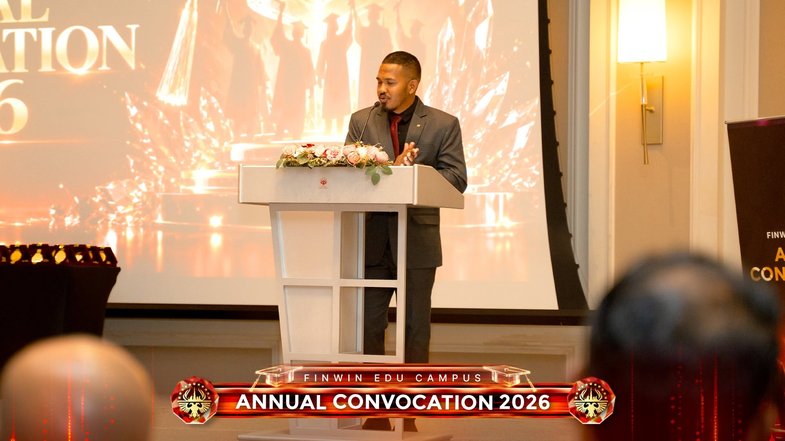
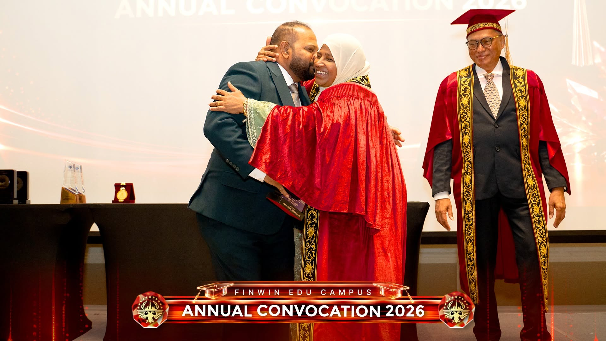
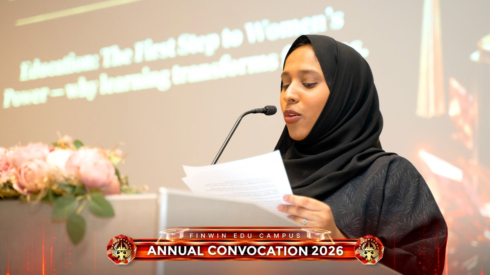
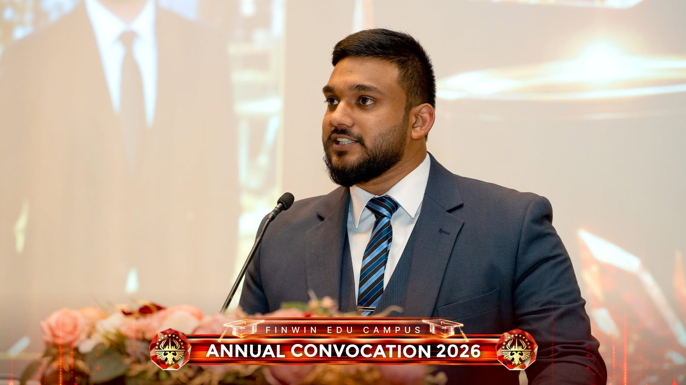

On 2 October 2026, Finwin Edu Campus celebrated its Convocation of Class 2026 at the Kempinski The Boulevard, Dubai, UAE. Graduates received their first degrees and Master's degrees at a ceremony that brought together students, families, faculty and the wider Finwin community.
The evening marked the end of years of study and the start of professional careers. It also carried a clear message about the kind of graduate Finwin wants to send into the world: capable, principled and ready to contribute.
A New Theme for a New Era
Last year, Finwin carried the message “Empowering Global Minds, Inspiring Future Leaders.” At Convocation 2026, the campus took that vision into a new era with a fresh message: “Shaping Alpha Minds, Sustaining Tomorrow.”
The theme reflects the world today's graduates are entering. Generation Alpha has grown up with the internet, smartphones and artificial intelligence as part of everyday life. Finwin's view is that education must adapt to this generation, and must also teach it what technology cannot supply: judgement, compassion, integrity and responsibility.
The Ceremony

The ceremony was compered by Master of Ceremonies Yuzran Lantra, who guided the audience through the programme with poise. The Director of Compliance & Quality Assurance, Mr. Rishard Fallil, conducted the ceremonial declaration of both the opening and the closing, giving the event a formal and dignified frame from start to finish.
Guest of Honour: Twenty Years of Teaching Arabic and Tajweed

The Guest of Honour was Mrs. Feroza Hamim, who was recognised with an award in appreciation of her 20 years of dedication to teaching Arabic and Tajweed. An alumna of the Muslim Ladies Arabic College, Kaleliya, Mrs. Feroza Hamim has spent two decades helping learners read and recite with accuracy and confidence.
Her recognition reminded graduates that lasting impact in education is built through patience, discipline and years of steady service.
The Ceremonial Speech: Human Wisdom in the Age of AI
Mr. Rishard Fallil, Director of Compliance & Quality Assurance, delivered the ceremonial speech. He opened with a question: what happens when a generation can ask a machine almost anything, yet still needs to learn which questions are worth asking?
His answer was that artificial intelligence can write, analyse, translate and design in seconds, but it cannot replace human judgement, compassion, integrity or responsibility. Education, he said, must produce capable human beings, not only certificate holders: people who can think, adapt, communicate, work with technology and solve real problems.
He described the Finwin journey in four steps: Learning, Capability, Professional Excellence and Contribution. A qualification should not stay on a wall. It should become a skill, then professional competence, then a meaningful contribution. In this context he restated the campus commitment to “Quality Uncompromised”: in what is taught, how it is taught and assessed, how learners are supported, and in the graduates sent into society.
His advice to the graduates was direct:
Ask not only “What can I gain?” but also “What value can I create?”
If technology gives you speed, give society wisdom.
If competition gives you ambition, give your profession integrity.
If success gives you opportunity, create opportunities for others.
He thanked parents for their trust and academic staff for being mentors, guides and role models. He closed with a line the audience is likely to remember: the future will belong not to those who simply use AI, but to those who combine it with human wisdom. His final call was to “become the generation that builds a better future”: learn with purpose, lead with integrity, serve with humanity and build tomorrow.
Education: The First Step to Women's Power

Ms. Fathima Nuskiya Mohamed Nasar addressed the gathering on Education: The First Step to Women's Power. Her talk explored why learning transforms futures: how education gives women knowledge, confidence and independence, and how an educated woman strengthens her family and community. The theme sat naturally beside the evening's wider message, that knowledge matters most when it is put to work for others.
Recognising Excellence: The Outstanding Achievers of 2026
A highlight of Convocation 2026 was the recognition of individuals whose achievements, dedication and contributions exemplify the values of Finwin Edu Campus. The awards celebrated excellence across academic performance, employee contribution, student achievement, creativity and leadership.
Best Employee of the Year 2026 — Aziza Ibrahim Khan

Aziza Ibrahim Khan received the Best Employee of the Year 2026 award in recognition of outstanding employee performance. This honour celebrates dedication, professionalism and commitment in contributing to institutional success and maintaining a positive learning environment.
Academic Excellence Award 2026 — Faculty of Management

Zaharul Rumaishadh Rimzy received the Academic Excellence Award 2026 for the Faculty of Management. The award recognises outstanding academic achievement and reflects the importance of perseverance, disciplined learning and a commitment to high academic standards.
Outstanding Student 2026 — Faculty of Engineering / Technology

Abdullah Ikram received the Outstanding Student Award 2026 for the Faculty of Engineering / Technology. This recognition celebrates student achievement and the potential of emerging talent to contribute to innovation, technological advancement and future professional excellence.
Campus Screen Star Award 2026 — Abdul Rahman Sudais

Abdul Rahman Sudais received the Campus Screen Star Award 2026, adding a creative dimension to the celebrations. The award reflects the importance of confidence, communication, creativity and student engagement alongside academic development.
Together, these awards illustrate Finwin's belief that excellence takes many forms. Whether demonstrated through academic achievement, professional dedication, technical potential or creative expression, individual talent deserves recognition, encouragement and opportunities to flourish.
The Mentor: Mr. Rishard Fallil

The recognition of Mr. Rishard Fallil as The Mentor highlighted the importance of guidance, encouragement and the sharing of professional knowledge in shaping future generations.
Effective mentoring extends beyond teaching. It involves helping individuals recognise their strengths, build confidence, develop sound judgement and approach challenges with resilience. It also creates a culture in which experience is shared, talent is nurtured and continuous improvement becomes a collective responsibility.
This spirit of mentorship closely aligns with Finwin's wider mission to develop graduates who can move forward with both professional competence and a strong sense of purpose.
The Leader Steering TALENT 1000 UAE: Mr. Faroon Hamim

A central figure in Finwin's institutional journey is Mr. Faroon Hamim, Founder and Chairman of Finwin Group, recognised for his leadership in steering TALENT 1000 UAE.
His role reflects the importance of strategic direction, entrepreneurship and talent development in creating opportunities for individuals to progress. Through leadership and a commitment to educational advancement, Finwin continues to focus on helping learners transform their ambitions into meaningful achievements.
The connection between visionary leadership, dedicated mentorship and academic excellence remains central to the institution's aspirations for the future.
Vote of Thanks and Closing

The vote of thanks was delivered by Abdul Rahman, who thanked the guests, parents, faculty and organisers for making the day possible.
The Director of Compliance & Quality Assurance then formally declared the ceremony closed.
For the Class of 2026, the day was a milestone, and also a challenge. As the ceremonial speech put it, a certificate may open a door, but character decides what happens after walking through it. Finwin Edu Campus congratulates every graduate and wishes them success in building tomorrow.